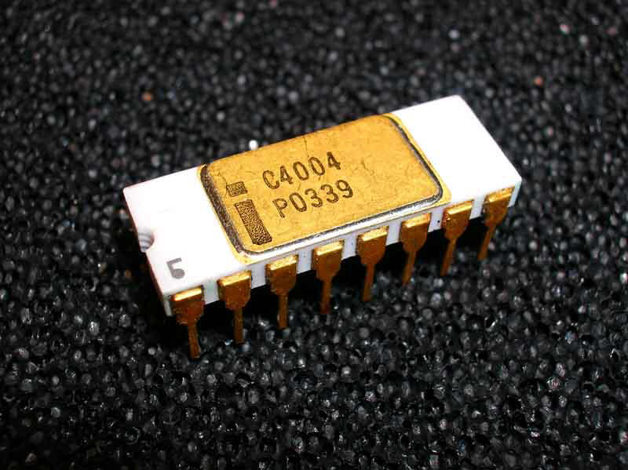
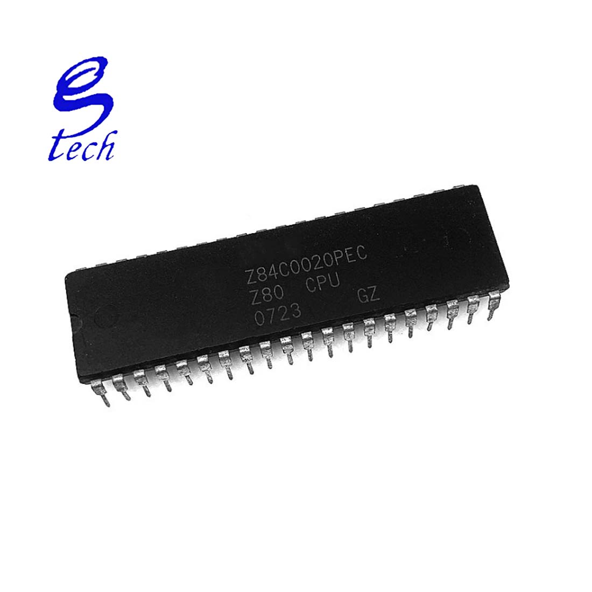
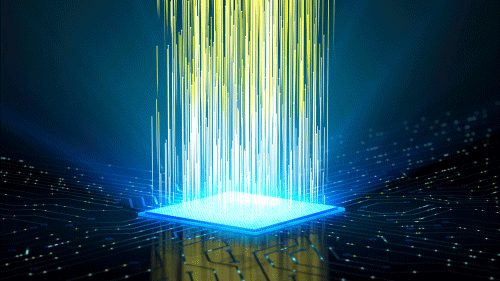

SEJARAH MIKROPROSESOR
ARSITEKTUR MIKROPROSESOR
SEJARAH MIKROPROSESOR
Intel Corporation pada tahun 1971 memperkenalkan mikroprosesor untuk pertama kali nya di Amerika Serikat. Mikroprosesor yang dikeluarkan oleh perusahaan ini adalah Intel 4004 yang merupakan hasil rancangan dari Federico Faggin. Intel 4004 adalah prosesor 4 bit yang menggunakan teknologi PMOS 10 µm.
Mikroprosesor INTEL 4004
Pada tahun 1972, Intel meluncurkan kembali produknya, yaitu mikroprosesor intel 8008. Prosesor ini mempunyai kecepatan dua kali lipat lebih cepat daripada mikroprosesor 4004. Mikroprosesor ini mempunyai alamt memori 8 bit. Mikroprosesor intel 8008 didesain hanya untuk menyelesaikan satu pekerjaan saja.
Mikroprosesor terus mengalami perkembangan. Pada tahun 1973, intel mengeluarkan mikroprosesor 8 bit yang memiliki kecepatan 10 kali lebih cepat yaitu mikroprosesor 8080, pada tahun 1977 Intel mikroprosesor 8085 dengan bit yang sama tetapi dengan frekuensi clock lebih tinggi.
Perusahaan intel punt mengeluarkan mikroprosesro Z80 yang dibuat oleh zilog Corporation, Z80 dibuat untuk menyempurnakan kekurangan – kekurangan Intel 8080.
Mikroprosesor Z80
Pada tahun 1978 intel mengeluarkan produk mikroprosesor 16 bit nya yaitu intel 8086, setahun berikut nya intel mengeluarkan produk nya yaitu mikroprosesor 8088 sebagai penyempurnaan dari intel 8086.
Pada tahun 1993, dirilis intel pentium. Mikroprosesor ini memiliki fasilitas untuk menangani data, seperti suara dan gambar. Pada tahun 1997 diciptakan intel pentium II prosesor yang dibuat untuk multimedia. Selanjutnya diproduksi intel celeron dan intel pentium III Xeon pada tahun 1999. Pada tahun 2001 intel membuat prosesor khusus untuk komputer server
Pada tahun 2001 intel membuat prosesor khusus untuk komputer server, yaitu Intel Itanium, prosesor ini merupakan mikroprosesor pertama yang menggunakan 64 bit.

Sistem Pada MIKROPROSESOR
Sistem mikroprosesor berbeda dengan mikroprosesor. Sebuah mikroprosesor memerlukan komponen lain dalam sebuah sistem mikroprosesor. Untuk menjalankan atau mengeksekusi program mikroprosesor memerlukan komponen lain seperti memori sebagai tempat penyimpan instruksi atau program dan data. Selanjutnya apa itu sistem mikroprosesor dan bagaimana sistem mikroprosesor bekerja akan dibahas lebih awal sebelum mempelajari bagaimana mikroprosesor diprogram.
Sistem mikroprosesor dibagi menjadi 2 pengertian yaitu pengertian sistem dan mikroprosesor. Sistem Mikroprosesor dapat dipahami dari dua kata pembangunnya yaitu :
Sistem adalah gabungan dari beberapa elemen atau komponen yang membangun suatu fungsi tertentu. Gabungan dari beberapa elemen dapat disebut sebagai sistem jika memiliki fungsi atau berfungsi.
Mikroprosesor sebagaimana dibahas diatas secara fisik adalah sebuah chip rangkaian terintegrasi (IC) mikro elektronika dalam paduan skala yang sangat besar (VLSI= verry large scale integration).

Pada sistem ini , control unit bertugas memberi tahu memory unit, ALU, dan input/output unit (I/O) mengenai respons yang diberikan terhadap intruksi yang telah dikirim ke CPU. Hal ini dapat dimaknai bahwa sistem mikroprosesor merupakan sebuah sistem yang dibentuk dari gabungan CPU, Memory Unit, ALU, dan I/O sehingga dapat berfungsi untuk memproses, menjalankan atau mengeksekusi program yang diberikan.sebagai contoh : perangkat yang sering ditemui menggunakan sistem mikroprosesor adalah laptop, kalkulator, dan pengendali lampu lalu lintas
Jadi sistem mikroprosesor merupakan gabungan berbentuk interkoneksi dari CPU, unit memori, dan unit I/O. Secara blok diagram sistem mikroprosesor dapat digambarkan seperti Gambar diatas. Dari Gambar diatas. diagram sistem mikroprosesor tersusun dari tiga komponen utama dan tiga komponen pendukung. Keenam komponen pembentuk sistem mikroprosesor adalah sebagai berikut:
Unit mikroprosesor atau Microprocessor Unit ( MPU) atau CPU,
Unit memori baca atau Read Only Memory (ROM)
Unit memori baca tulis atau Read Write Memory (RWM)
Unit Input output terprogram atau Programmable Input Output (PIO)
Peralatan input dapat berupa keypad, keyboard, mouse, joystick, scanner, kamera, modem, dan sebagainya.
Peralatan output dapat berupa display LED, monitor, printer, ploter, dan sebagainya.
Unit detak/Clock sebagai penggerak sinkronisasi sistem
PENGERTIAN MIKROPROSESOR
Mikroprosesor adalah sebuah chip yang dapat melaksanakan operasi hitungan, operasi nalar dan operasi kendali secara digital, mikroprosesor dikemas dengan plastik atau keramik yang dengan pin – pin sebagai terminal input dan output dari chip. Mikroprosesor merupakan rangkaian terpadu (Integrated circuit) dalam bentuk komponen chip VLSI (Very Large Scale Integration) yang mampu menjalankan perintah secara berurutan dalam bentuk program, sehingga dapat bekerja sesuai yang diinginkan programmer. Perintah pada suatu mikroprosesor diberikan dalam bentuk biner atau bahasa mesin.
SALURAN - SALURAN PADA MIKROPROSESOR

Saluran alamat (addres bus) digunakan dalam menentukan suatu lokasi alamat memori maupun lokasi alamat dari perangkat I/O yang selalu digunakan dalam suatu sistem mikroprosesor itu sendiri, sebab jumlah saluran yang ada langsung menentukan banyaknya alamat memori (kapasitas memori) yang dapat ditanganinya, sifat saluran adalah keluaran, sehingga kendali dilakukan dari mikroprosesor ,menuju ke perangkat – perangkat ingatan maupun perangkat – perangkat keluaran/masukkan.

Data bus (saluran data) diperlukan sebagai jalan masukan atau keluaran data yang berfungsi sebagai instruksi atau penyerta instruksi antara perangkat ingatan dan perangkat I/O dengan CPU. Mikroprosesor Z80 memiliki 8 buah saluran data (D0-D7) atau 8 bit data.sifat dari sluran data adalah dua arah (bidirectional), jadi arahnya dapat bolak – balik antara mikroprosesor dengan perangkat ingatan maupun perangkat masukkan keluaran.

Saluran kendali (Control Bus) digunakan untuk melakukan pengendalian terhadap komponen – komponen pendukung dalam sistem mikrprosesor. Semua aktivitas lalu lintas data maupun pengambilan instuksi ke perangkat ingatan, perangkat keluaran masukan, dan lain – lainnya diatur dan dikendalikan melalui saluran kendali tersebut, pada mikroprosesor saluran - saluran kendali ada dua kelompok, yaitu : a) Saluran kendali yang bersifat keluaran, artinya suatu pengendalian yang arahnya dari mikroprosesor menuju keperangkat pendukung (perangkat ingatan, I/O, dekoder, dan lain – lainya ) b) Saluran kendali yang bersifat masukan, artinya suatu pengendalian yang arahnya dari perangkat luar mikroprosesor menuju mikroprosesor tersebut
Blok diagram saluran - saluran yang terdapat pada mikroprosesor Z80
Sifat - Sifat Saluran Pada Mikroprosesor
yaitu berkaitan dengan level tegangan maupun arus pada logik 0 dan 1 adalah sesuai dengan sistem TTL. Dengan demikian, dapat langsung dihubungkan dengan gerbang – gerbang TTL, baik sebagai keluaran maupun sebagai masukan dalam batasan unit load-nya ( diperhitungkan kemampuan Fan in dan Fan out).
yaitu dalam keadaan menunggu (sifat saluran selain dalam keadaan logik 0 atau logik 1) akan memiliki nilai impedansi yang tinggi terutama pada saluran yang bersifat dua arah. Sehingga akan sangat menghemat serta menyederhanakan sistem pengawatan dengan komponen – komponen yang lain karena lalu lintas data tidak diperlukan pergantian saluran, sehingga penyambungan dapat dipararelkan.
ARSITEKTUR PERANGKAT LUNAK
Fungsi dari mikroprosesor adalah sebagai pusat untuk mengolah atau memproses data sehingga mikroprosesor juga dikenal dengan nama Central Processing Unit (CPU) dan Microprosesor Unit (MPU). Mikroprosesor mempunyai tiga bagian pokok yang saling bekerja sama, saling mendukung, dan melengkapi agar instruksi yang diterima dapat diproses, diterjemahkan dan dilaksanakan. Ketiga bagian tersebut adalah Arithmetic Logic Unit (ALU), Register Unit (RU), dan Control Unit (CU). Susunan dari ketiga bagian pokok tersebut dinamakan arsitektur atau rancang bangun mikroprosesor. Berikut penjelasan bagian tersebut.
ALU adalah bagian dari mikroprosesor yang terdiri atas gerbang – gerbang logika yang bekerja untuk memproses intruksi operasi aritmatika dan operasi logika, ALU dapat dimaknai sebagai pengolah data.

Register merupakan bagian mikroprosesor yang digunakan sebagai tempat untuk penyimpanan data dan hasil operasi atau pemrosesan dari ALU.

Control unit adalah bagian dari Central Prosesing Unit (CPU) yang berfungsi sebagai pengendali data.
Jenis – Jenis Arsitektur Mikroprosesor
Arsitektur sebuah mikroprosesor menunjukkan rancangan tentang sofware dan hardware yang terpadu menjadi satu. Rancangan perangkat lunak dan perangkat keras sebuah mikroprosesor dikembangkan secara simultan sebelum sebuah mikroprosesor diproduksi. Arsitektur software mikroprosesor disebut set instruksi, setiap mikroprosesor memliki set instruksi yang terdiri dari sejumlah instruksi yang dapat bekerja di dalam perangkat keras mikroprosesor.
Internal software design berkaitan dengan bentuk atau rancangan set instruksi yang digunakan. Setiap perintah dalam set instruksi harus bekerja pada saat proseso decoding yang dilakukan oleh perangkat keras mikroprosesor. Disebut internal software karena set instruksi berkaitan langsung dengan perangkat keras yang ada didalam mikroprosesor, setiap perintah dalam set instruksi dikodekan dalam heksadesimal.
a) Internal Sofware Design
Ada tiga model arsitektur mikrprosesor dilihat dari perangkat lunak dalam bentuk set instruksi sebagai software design, yaitu Complex instruction set computer (CISC), reduce instruction set computer (RISC) dan mikroprosesor super skala.
1) Complex Instruction set computer (CISC) CISC adalah jenis arsitektur mikroprosesor yang menggunakan banyak jenis dan ragam instruksi, CISC menyediakan kemampuan setiap instruksi dapat mengeksekusi operasi low level, seperti mengeload data dari memori, operasi aritmatika dan melakukan prosedur penyimpanan ke memori. Contoh mikroprosesor yang menggunakan arsitektur CISC adalah intel 8088, 8085, 8086, Zilog Z-80 CPU, NS 32016, MC6800. Jumlah instruksi lebih banyak jenis dan ragamnya, maka kelemahan CISC terletak pada sulitya mengembangkan interpreter dan kompiler.
2) Reduce Instruction Set Computer (RISC) RISC merupakan arsitektur instruction set yang menekankan pada kesederhanaan instuksi bekerja sedikit, namun tetap memberikan hasil performa yang tinggi. Hal ini bisa terjadi karena proses eksekusi instruksinya sangat capat. RISC lebih baru dibandingkan dengan arsitektus CISC. Arsitektur RISC memiliki sedikit instruksi dengan banyak nya register. Contoh mikroprosesor dengan arsitektur RISC adalah AMD 2900, MIPS R2000, MC 8800, ATMET 90S1200, 90S2313, 90S2323, 90S2343, 90S4434, 90S8515.
3) Mikroprosesor superskala Mikroprosesor dengan arsitektur superskala adalah mikroproseso yang menggunakan instruksi – instruksi biasa (Aritmatika, Floating point, store, brach) tetapi bisa diinisialisasi secara simultan dan dapat dieksekusi secara independen, contoh mikroprosesor dengan arsitektur superskala, antara lain :IBM RS 6000, Pentium
b) Internal Hardware Design
Internal hardware design berkaitan dengan masalah – masalah jenis, jumlah dan ukuran register, serta komponen lainnya, untuk dapat menginstalasikan sebuah mikroprosesor dengan komponen lainnya seperti RAM, ROM, dan I/O sebagai komponen utama dan rangkaian Clock, reset, buffer dan lain – lain sebagai komponen pendukung, diperlukan pemahaman sistem bus yang dimiliki oleh setiap mikroprosesor. Ada tigas jenis arsitektur mikroprosesor berdasarkan internal hardware design, yaitu arsitektur I/O terisolasi, arsitektur I/O terpetakan dalam memori dam arsitektur harvard.
Internal hardware design berkaitan dengan masalah – masalah jenis, jumlah dan ukuran register, serta komponen lainnya, untuk dapat menginstalasikan sebuah mikroprosesor dengan komponen lainnya seperti RAM, ROM, dan I/O sebagai komponen utama dan rangkaian Clock, reset, buffer dan lain – lain sebagai komponen pendukung, diperlukan pemahaman sistem bus yang dimiliki oleh setiap mikroprosesor. Ada tigas jenis arsitektur mikroprosesor berdasarkan internal hardware design, yaitu arsitektur I/O terisolasi, arsitektur I/O terpetakan dalam memori dam arsitektur harvard.

Mikroprosesor dengan arsitektur I/O terisolasi menggunakan desain pengalamatan I/O terpisah atau terisolasi dengan pengelamatan memori. Ciri pokok dalam mikroprosesor dengan arsitektur I/O terisolasi yaitu pengelamatan I/O menggunakan sebagian dari jumlah addres bus, adapun pengelamatan memori menggunakan semua addres bus. Pada saat pengedalian terjadi pergantian, saat mikroprosesor mengakses memori, maka I/O harus off dan sebaliknya, pada saat mikroprosesor mengakses I/O, memori harus off.

Mikroprosesor dengan arsitektur I/O terpetakan dalam memori menyatukan sel – sel I/O dalam pengelamatan bersama dengan sel – sel memori, mikroprosesor dengan arsitektur I/O terpetakan dalam memori dapat tampak bahwa sel – sel I/O menjadi satu dengan sel – sel memori. Arsitektur I/O terpetakan dalam memori menunjukkan penggunaan instruksi tipe memori untuk mengakses alat – alat I/O. I/O yang dipetakan dalam memori memungkinkan CPU menggunakan instruksi yang sama untuk alih data ke memori seperti digunakan untuk alih data ke I/O. Sebuah pintu I/O diperlakukan seperti sebuah lokasi memori keuntungan sistem ini adalah instruksi yang digunakan untuk pembacaan dan penulisan memori dapat digunakan untuk memasukkan dan mengluarkan data pada I/O. kerugian arsitektur I/O terpetakan dalam memori sebagai berikut a) Tiap 1 pintu I/O mengurangi satu lokasi memori yang tersedia b) Alamat lokasi I/O memerlukan 16 bit saluran. c) Instruksi I/O yang dipetakan dalam memori lebih lama dari intruksi I/O terisolasi.
Arsitektur harvard memggunakan desain yang hampir sama dengan arsitektur I/O terisolasi. Perbedaaannya pada arsitektur harvard antara memori program dan memori data dipisahkan. Pemisahan antara memori program dan memori data menggunakan perintah akses memori berbeda. Arsitektur harvard ditinjau dari kemampuan jumlah memori lebih menguntungkan. Terpisah nya memori program dengan memori data menyebabkan arsitektur harvard berkemampuan memori dua kali lipat kemampuan memori arsitektur I/O terisolasi.